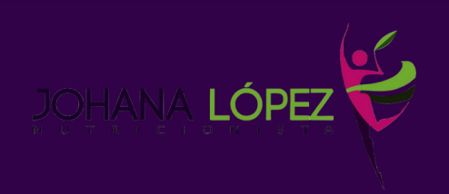
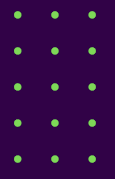
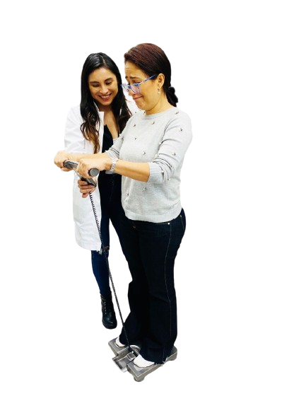

SECRETOS NUTRICIONALES PARA POTENCIAR TU
TRATAMIENTO CORPORAL, LA FORMULA PERFECTA DE
NUTRICION MAS ANTROPOMETRIA.


NUTRICION Y ANTROPOMETRIA APLICADA A
TRATAMIENTO CORPORALES
¿Sabías que cada persona tiene sus propias necesidades
nutricionales y que su composición corporal varía según su
peso, talla, edad, sexo, perímetros y otros parámetros
antropométricos?

SUMÉRGETE EN EL FASCINANTE MUNDO DE LA NUTRICIÓN Y LA ANTROPOMETRÍA Y ENTÉRATE DE
CÓMO ESTOS DOS PILARES PUEDEN FAVORECER LOS RESULTADOS DE LOS TRATAMIENTOS CORPORALES.